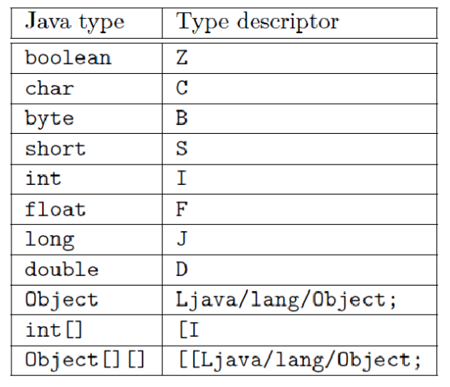
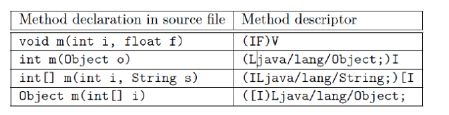
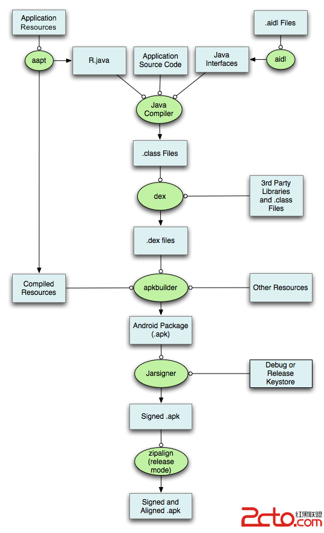

什么是ASM?
ASM 是一个 Java 字节码操控框架。它能被用来动态生成类或者增强既有类的功能。ASM 可以直接产生二进制 class 文件，也可以在类被加载入 Java 虚拟机之前动态改变类行为。Java class 被存储在严格格式定义的 .class 文件里，这些class文件拥有足够的元数据来解析类中的所有元素：类名称、方法、属性以及 Java 字节码（指令）。ASM 从类文件中读入信息后，能够改变类行为，分析类信息，甚至能够根据用户要求生成新类。
简而言之就是解析class(字节码)文件，修改、生成的新的class(字节码).
###class基本知识
类型描述符：可以理解为类在class内部的名称。
基本类型的描述符：Z表示boolean，C表示char，B表示byte，I表示int，F表示float，J表示long，D表示double。一个类的描述符就是这个类的内部名称，在前面加上一个L，在后面加上一个分号即可。例如，String的类型描述符就是Ljava/lang/String.最后，一个数组的类型描述符就是一个中括号[后面跟上数组元素的类型描述符。

方法描述符
一个方法描述符就是一个包含参数类型的描述符，以及方法返回类型描述符的字符串。一个方法描述符以一个左括号开始，然后跟上每个参数的描述符，然后是一个右括号，最后就是返回值的类型描述符，如果一个方法的返回值是void，那么返回值的类型描述符就是V（一个方法描述符不包含这个方法的名称以及参数的名称）.

ASM核心类介绍
主要核心类：
* ClassReader 一个字节码读取和分析器，类似SAX事件流的一种读取机制，当发生一些时间时就会调用相关的visitor进行相应的处理
* ClassVisitor
* FieldVisitor
* MethodVisitor
* AnnotationVisitor
* ClassWriter类：它实现了ClassVisitor接口，用于拼接字节码。
来我们来写一个类
ClassWriter cw = new ClassWriter(0);
//类定义
cw.visit(V1_8, ACC_PUBLIC, "pkg/MyClassName", null, "java/lang/Object", new String[] { "pkg/MyInterface" }); //版本、访问修饰符、包名加类民、泛型的信息、父类、接口
//生成成员变量public int mNum=0;
cw.visitField(ACC_PUBLIC, "mNum", "I", null, new Integer(0)).visitEnd();
//生成方法
cw.visitMethod(ACC_PUBLIC, "say_hello_world", "(Ljava/lang/String;)V", null, null).visitEnd();
cw.visitEnd();
|
接下我们来把方法实现一下
//生成方法
MethodVitor mv = cw.visitMethod(ACC_PUBLIC, "say_hello_world", "(Ljava/lang/String;)I", null, null);
//访问静态成员变量System.out
mv.visitFieldInsn(GETSTATIC, "java/lang/System", "out", "Ljava/io/PrintStream;");
//塞入参数
mv.visitLdcInsn("hello world");
//执行println方法
mv.visitMethodInsn(INVOKEVIRTUAL, "java/io/PrintStream", "println", "(Ljava/lang/String;)V", false);
//Return
mv.visitInsn(Opcodes.RETURN);
mv.visitEnd();
|
解析一个class文件的基本流程：
...获取class字节流或字节数组
ClassReader cr = new ClassReader(bytes);
ClassWriter cw = new ClassWriter(cr, ClassWriter.COMPUTE_MAXS);
ClassVisitor cv = new XXXClassVisitor(cw);
cr.accept(cv, EXPAND_FRAMES);
//获取修改后的字节数据
byte[] code = cw.toByteArray();
...保存成的class文件
|
ClassVisitor cv = new ClassVisitor(Opcodes.ASM4, cw) {
//开始解析
void visit(int version, int access, String name, String signature,
String superName, String[] interfaces) {}
//处理注解
AnnotationVisitor visitAnnotation(String desc, boolean visible) {}
//成员变量
FieldVisitor visitField(int access, String name, String desc,
String signature, Object value) {}
//处理方法
MethodVisitor visitMethod(int access, String name, String desc,
String signature, String[] exceptions) {}
//结束
void visitEnd(){};
};
|
MethodVisitor mv = new MethodVisitor(api, mv) {
//开始解析
void visitCode() {}
//执行相关visit指令都会触发
void visitInsn(int opcode){}
//处理注解
AnnotationVisitor visitAnnotation(String desc, boolean visible) {}
//方法调用指令
void visitMethodInsn(int opcode, String owner, String name,
String desc, boolean itf)
//结束
void visitEnd(){};
};
|
Android上的如何使用

public class TestAsmPlugin extends Transform implements Plugin {
...
@Override
void transform(Context context, Collection inputs,
Collection referencedInputs, TransformOutputProvider outputProvider,
boolean isIncremental) {
inputs.each { TransformInput input ->
input.directoryInputs.each { DirectoryInput directoryInput ->
//遍历class文件并进行asm处理
}
input.jarInputs.each { JarInput jarInput ->
//处理jar包内的数据
}
}
}
}
|
transformClassesWithDexForXXX.doFirst {
Collection<File> inputFile = contextProvider.getDexInputFile(new ContextProvider.Filter() {
@Override
boolean accept(String path) {
return path.startsWith(intermediatesPath)
}
})
//读取遍历相关class文件
}
|
###应用场景
无埋点统计、APM、插桩
其实就是在上面的基础进行各种位置的插桩,具体例子Android无埋点数据收集SDK关键技术
瘦包
蘑菇街的ThinRPlugin插件
相关原理：android中的R文件，除了styleable类型外，所有字段都是int型变量/常量，且在运行期间都不会改变。所以可以在编译时，记录R中所有字段名称及对应值，然后利用asm工具遍历所有class，将引用R字段的地方替换成对应常量，然后将R$styleable.class以外的所有R.class删除掉
BTW:类似瘦包的思路：Facebook redex(不是使用asm)